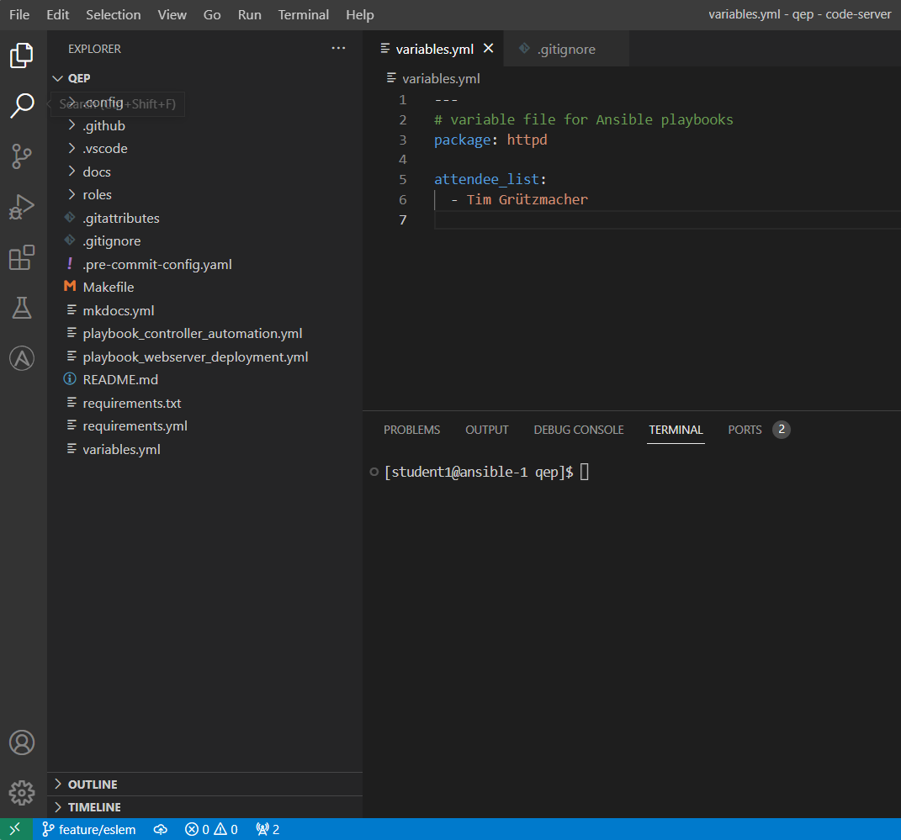
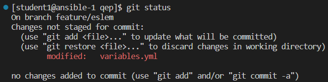
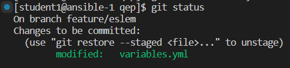
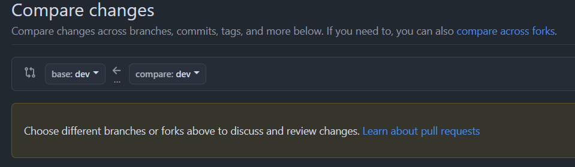

Teil 3 - Update Code
In der vorherigen Übung hast du (automatisiert) ein Job-Template in der Automation Platform erstellt, mit einem Survey zur Personalisierung des Webservers.
Damit dein Name ebenfalls in der Auswahlliste des Surveys auftaucht, muss der Code (die Listen-Variable) angepasst werden.
Du durchläufst dabei einen typischen Entwicklungs-Workflow, du verwendest das Versionskontroll-Tool Git und (den Git-Hosting-Service) Github, zurvor hast du bereits einen Issue erstellt, wirst auf der Kommandozeile den Code nach deinen Wünschen anpassen und anschließend einen Merge Request (Pull Request) erstellen.
gitGraph
commit
commit
branch dev
checkout dev
commit
branch feature/name
checkout feature/name
commit id: "Added name to attendee_list"
checkout dev
merge feature/name
checkout main
merge dev
commit type:HIGHLIGHT1. Variablen-Datei anpassen
Im vorherigen Schritt hast du dir das Projekt mit dem Playbook-Code auf deine Workstations (deine Entwicklungsumgebung) kopiert und einen neuen Branch erstellt.
Füge in der Datei variables.yml deinen Namen in der Liste hinzu, damit das Survey im Webserver Deployment Template diesen als Option für den personalisierten Webserver anbietet.
Du kannst die Datei im Explorer links anklicken, sie wird im Code Editor geöffnet und kann dort editiert werden:

Die Datei ist im sog. YAML-Format (ein Datenserialisierungsformat), füge in der Variablen attendee_list deinen Namen als weiteren Listeneintrag hinzu (beginnt mit einem Minus (Dash) Symbol), achte dabei auf die Einrückung (zwei Leerzeichen vor dem Minus-Symbol)
Inhalt der Variablen-Datei vor der Anpassung
Am Ende sollte die Datei folgendermaßen aussehen (mit eurem Namen natürlich):
---
# variable file for Ansible playbooks
package: httpd
attendee_list:
- Tim Grützmacher
- Eslem Bayraktar
2. Änderung prüfen und commiten
Da sich das Projekt unter Git-Versionskontrolle befindet, kannst du jede Veränderung überprüfen. Gib git status ein, du siehst, dass es eine Änderung in einer einzelnen Datei gibt (die von dir zuvor angepasste Datei variables.yml).

Mit dem folgendem Kommando fügst du die veränderte Datei hinzu (zu deinem geplanten Commit):
Anschließend sieht der Output vom git status Kommando etwas anders aus:

Jetzt wird die Änderung commited. Damit alle weiteren Entwickler auch wissen, welche Veränderung am Code vorgenommen wurde, solltest du dem Commit eine entsprechende Nachricht (Message) mitgeben.
Tip
Du kannst die Nachricht natürlich auch personalisieren, ansonsten das Kommando oben einfach kopieren, einfügen und ausführen.
Eine Fehlermeldung?
Das Kommando endet mit einer Author identity unknown Fehlermeldung.
Das war zu erwwarten, du musst Git erst einmal sagen, wer du bist!
Damit Git und die restlichen Entwickler auch wissen, wer die Änderung vorgenommen hat, musst du Namen und E-Mail angeben (die Fehlermeldung gibt die passenden Kommandos vor). Als E-Mail-Adresse (user.email) musst du die gleiche Adresse verwenden, mit welcher du dich bei Github angemeldet hast, als Name (user.name) Vor- und Nachname.
Kopiere dir die beiden Kommandos aus der Fehlermeldung, passe sie entsprechend an und führe sie einzeln aus.
Hilfe benötigt?
Hier sind die Kommandos noch einmal:
Nutze die gleiche E-Mail-Adresse mit welcher du dich bei Github angemeldet hast!
Statt
Your Namesollte natürlich dein richtiger Name hinterlegt werden!
Nachdem du Git deine Identität mitgeteilt hast, kannst du den Commit noch einmal ausführen.
Mit der Up-Taste kannst du zum vorherigen Kommando zurück, sobald du es erreicht hast, einfach mit Enter bestätigen.
[student1@ansible-1 qep]$ git commit -m "Added new name to attendee_list"
[feature/eslem 4dea3cf] Added new name to attendee_list
1 file changed, 1 insertion(+)
Das sieht gut aus, du hast deine Änderung lokal versionskontrolliert. Im nächsten Schritt werden wir die Änderung im Github-Repository veröffentlichen.
3. Branch veröffentlichen
Nachdem du die gewünschten Änderungen am Code vorgenommen hast und lokal versionskontrolliert hast, muss sie jetzt auch veröffentlicht werden.
Führe das folgende Kommando aus:
Noch eine Fehlermeldung?
Auch das war zu erwwarten, das Remote-Repository auf Github kennt deinen Branch noch gar nicht!
Du musst Git mitteilen, welcher Remote-Branch zu seinem lokalen Branch gehört (du erstellst einen sogenannten Tracking-Branch). Auch hier gibt die Fehlermeldung wieder einen Lösungsvorschlag vor, den kannst du wieder kopieren (mit Strg + C) und ausführen.
Hilfe benötigt?
Hier ist das Kommando noch einmal:
Bei mir heißt der Branch lokal natürlich anders als bei dir, hinterlege deinen eigenen Branch
fature/name.
Der Output gibt an, dass der Branch veröffentlicht wurde, unter dem folgenden Link siehst du jetzt auch im Github deinen Branch mit deinen Code-Änderungen:
https://github.com/TimGrt/qep/branches
4. Pull Request erstellen
Dein Code ist fertig, jetzt muss er noch in den passenden Branch überführt werden (in der AAP im Project wurde der dev Branch hinterlegt).
Im Github Projekt, klicke oben auf Pull Request und klicke auf der rechten Seite auf den grünen Button New pull request.

Im rechten Drop-Down-Menü wählst du deinen Branch (der Quell-Branch), der Pfeil zeigt an dass die Änderungen in den dev-Branch überführt werden sollen.
Den grünen Button Create Pull Request verwenden.
Dein Trainer wird mit dir die Änderungen überprüfen (einen sog. Code Review) durchführen und dann gemeinsam mergen (und eventuelle Merge Konflikte auflösen).